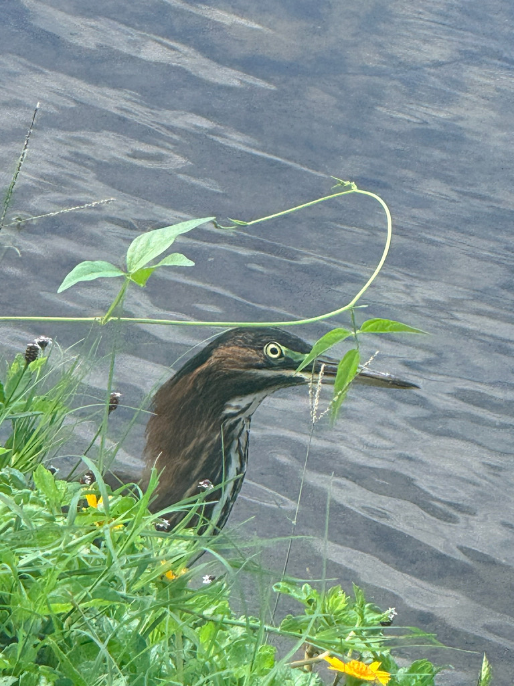

- The green heron is a small, stocky, secretive heron — far smaller than the great blue — with a velvet-green back, rich chestnut neck, and a dark cap it can raise into a short crest.
- It is one of the very few birds in the world known to use tools: it drops bait onto the water to lure fish within striking range.
- Its 'bait' can be a twig, an insect, a feather, even a bit of bread, and it will reposition the lure if it drifts — a genuinely clever piece of hunting.
- It hunts by stealth, crouched low and still on a branch or bank at the water's edge, often half-hidden in vegetation.
- Watch for a bird that looks almost neckless — until it strikes: the neck shoots out like a coiled spring, far longer than it seemed, to snatch prey from the water.
Small and stocky — roughly a third the size of a great blue heron.
Dark green-gray back, deep chestnut neck and breast, dark cap, and yellow to orange legs.
Often crouched low and horizontal at the water's edge.
Usually held tucked in, so the bird looks neckless and hunched — but it extends suddenly and surprisingly far when the heron strikes.
A sharp, explosive 'skeow' call, usually given as the bird flushes and flies off.
A small, dark, hunched heron at the edge of a pond, often partly hidden in vegetation or on a low branch. If you see a heron seemingly fishing with a dropped twig or insect, it is almost certainly this species.
Mainly small fish, plus insects, frogs, and other small aquatic animals — often caught by luring fish with dropped bait.
At the quiet, vegetated edges of the ponds, crouched low on a bank or overhanging branch — easy to miss until it moves or flushes with a sharp call.
Year-round resident, but much more active and vocal in the spring and summer breeding season — quieter and more stealthy in winter. Often solitary and well hidden, so it rewards a patient, careful look at pond margins.
Watch quietly from a distance and do not feed it. This shy heron flushes easily, and crowding it ends the hunt.


- © Christine Leamon (CC-BY-NC), via iNaturalist
- © Rob Carr (CC-BY-NC), via iNaturalist
- © Rhonda Olschefskie (CC-BY-NC), via iNaturalist